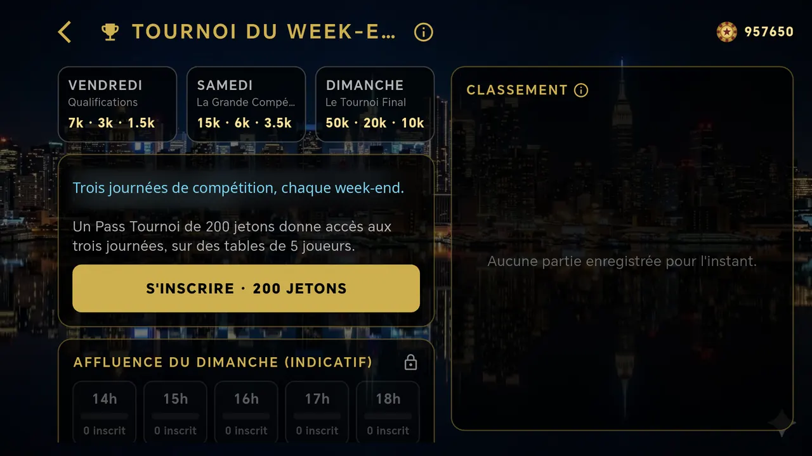

Une table qui grandit d'un seul bloc
L'application a d'abord été dessinée pour un téléphone tenu en paysage. Sur un écran plus grand qu'une surface de référence d'environ 1 100 × 620 points, toute l'interface est agrandie d'un même facteur : textes, avatars, cartes et boutons grandissent ensemble et gardent leur disposition.
La densité d'affichage est augmentée d'autant, si bien que les cartes, les images et l'accueil en 3D restent nets sur l'écran d'une tablette. Les téléphones, eux, ne sont pas touchés.
Le paysage, sauf quand vous écrivez
La table de jeu s'affiche en paysage, l'orientation qui laisse le plus de place au pli et à votre main. L'écran d'accueil accepte le portrait comme le paysage, et la fenêtre du chat libère la rotation pour écrire confortablement. Les vidéos, elles, passent toujours en paysage et s'affichent en entier.

Toutes vos cartes visibles
Avec 15, 18 ou 24 cartes selon le nombre de joueurs, la main ne sort jamais de l'écran : elle se resserre quand elle est grande. Sur tablette, la place supplémentaire rend chaque carte plus facile à toucher.
Une tablette, un téléphone, un même compte
Commencez sur la tablette du salon, continuez sur votre téléphone : avec un compte, vos jetons, vos amis et vos statistiques vous suivent d'un appareil à l'autre, et aussi sur PC ou dans le navigateur.

Questions fréquentes
L'application jeu de tarot fonctionne-t-elle sur tablette Android ?
Oui. Sur un grand écran, toute l'interface s'agrandit d'un même facteur et reste nette.
Peut-on jouer au tarot en portrait sur une tablette ?
La table de jeu se joue en paysage. L'accueil accepte le portrait, et le chat libère la rotation pour écrire.
Ma partie est-elle partagée entre ma tablette et mon téléphone ?
Avec un compte, vos jetons, vos amis et vos statistiques sont les mêmes sur tous vos appareils.
Les autres guides de l'application
Jouer au tarot contre l'ordinateur sur Android
Parties en solo contre l'IA, à 3, 4 ou 5 joueurs : gratuites, sans jetons, avec vos statistiques.
Jouer au tarot entre amis sur Android
Tables privées sur invitation, amis connectés, messages rapides et traduction du chat.
Tout sur l'application
Présentation complète de l'application jeu de tarot Android.
Les règles du jeu elles-mêmes (Bouts, Excuse, contrats) sont expliquées sur jeu de tarot .fr.